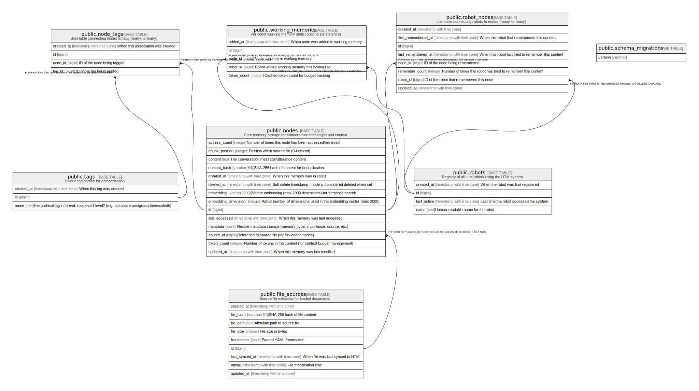

Database Schema Documentation¶
This document provides a comprehensive reference for HTM's PostgreSQL database schema, including query patterns, optimization strategies, and best practices.
Schema Overview¶
HTM uses PostgreSQL 17 with pgvector and pg_trgm extensions to provide:
- Vector similarity search via pgvector for semantic memory retrieval
- Full-text search with PostgreSQL's built-in tsvector capabilities
- Fuzzy matching using pg_trgm for flexible text search
- Many-to-many relationships for flexible tagging and categorization
Required Extensions¶
HTM requires these PostgreSQL extensions:
CREATE EXTENSION IF NOT EXISTS pg_trgm WITH SCHEMA public;
CREATE EXTENSION IF NOT EXISTS vector WITH SCHEMA public;
Entity-Relationship Diagram¶
Here's the complete database structure (auto-generated by tbls):

Table Reference¶
For detailed table definitions, columns, indexes, and constraints, see the auto-generated documentation:
Core Tables¶
| Table | Description | Details |
|---|---|---|
| robots | Registry of all LLM robots using the HTM system | Stores robot metadata and activity tracking |
| nodes | Core memory storage for conversation messages and context | Vector embeddings, full-text search, deduplication |
| tags | Unique hierarchical tag names for categorization | Colon-separated namespaces (e.g., ai:llm:embeddings) |
| file_sources | Source file metadata for loaded documents | Path, mtime, frontmatter, sync tracking |
Join Tables¶
| Table | Description | Details |
|---|---|---|
| robot_nodes | Links robots to nodes (many-to-many) | Enables "hive mind" shared memory; includes working_memory boolean for per-robot working memory state |
| node_tags | Links nodes to tags (many-to-many) | Flexible multi-tag categorization |
System Tables¶
| Table | Description | Details |
|---|---|---|
| schema_migrations | ActiveRecord migration tracking | Tracks applied migrations |
For the complete schema overview including all stored procedures and functions, see the Database Tables Overview.
Key Concepts¶
Content Deduplication¶
Content deduplication is enforced via SHA-256 hashing in the nodes table:
- When
remember()is called, a SHA-256 hash of the content is computed - If a node with the same
content_hashexists, the existing node is reused - A new
robot_nodesassociation is created (or updated if it already exists) - This ensures identical memories are stored once but can be "remembered" by multiple robots
JSONB Metadata¶
The nodes table includes a metadata JSONB column for flexible key-value storage:
| Column | Type | Default | Description |
|---|---|---|---|
metadata |
jsonb | {} |
Arbitrary key-value data |
Features:
- Stores any valid JSON data (strings, numbers, booleans, arrays, objects)
- GIN index (idx_nodes_metadata) for efficient containment queries
- Queried using PostgreSQL's @> containment operator
Query examples:
-- Find nodes with specific metadata
SELECT * FROM nodes WHERE metadata @> '{"priority": "high"}'::jsonb;
-- Find nodes with nested metadata
SELECT * FROM nodes WHERE metadata @> '{"user": {"role": "admin"}}'::jsonb;
-- Find nodes with multiple conditions
SELECT * FROM nodes WHERE metadata @> '{"environment": "production", "version": 2}'::jsonb;
Ruby usage:
# Store with metadata
htm.remember("API config", metadata: { environment: "production", version: 2 })
# Recall filtering by metadata
htm.recall("config", metadata: { environment: "production" })
Hierarchical Tags¶
Tags use colon-separated hierarchies for organization:
- programming:ruby:gems - Programming > Ruby > Gems
- database:postgresql:extensions - Database > PostgreSQL > Extensions
- ai:llm:embeddings - AI > LLM > Embeddings
Query by prefix to find all related tags:
SELECT * FROM tags WHERE name LIKE 'database:%'; -- All database-related tags
SELECT * FROM tags WHERE name LIKE 'ai:llm:%'; -- All LLM-related tags
File Source Tracking¶
The file_sources table tracks loaded documents for re-sync support:
| Column | Type | Description |
|---|---|---|
id |
bigint | Primary key |
file_path |
text | Absolute path to the source file |
file_hash |
varchar(64) | SHA-256 hash of file contents |
mtime |
timestamptz | File modification time for change detection |
file_size |
integer | File size in bytes |
frontmatter |
jsonb | Parsed YAML frontmatter metadata |
last_synced_at |
timestamptz | When file was last synced |
created_at |
timestamptz | When source was first loaded |
updated_at |
timestamptz | When source was last updated |
Nodes loaded from files have:
- source_id - Foreign key to file_sources (nullable, ON DELETE SET NULL)
- chunk_position - Integer position within the file (0-indexed)
Query nodes from a file:
SELECT n.*
FROM nodes n
JOIN file_sources fs ON n.source_id = fs.id
WHERE fs.file_path = '/path/to/file.md'
ORDER BY n.chunk_position;
Remember Tracking¶
The robot_nodes table tracks per-robot remember metadata:
first_remembered_at- When this robot first encountered this contentlast_remembered_at- Updated each time the robot tries to remember the same contentremember_count- Incremented each time (useful for identifying frequently reinforced memories)
This allows querying for:
- Recently reinforced memories: ORDER BY last_remembered_at DESC
- Frequently remembered content: ORDER BY remember_count DESC
- New vs old memories: Compare first_remembered_at across robots
Common Query Patterns¶
Finding Nodes for a Robot¶
SELECT n.*
FROM nodes n
JOIN robot_nodes rn ON n.id = rn.node_id
WHERE rn.robot_id = $1
ORDER BY rn.last_remembered_at DESC;
Finding Robots that Share a Node¶
SELECT r.*
FROM robots r
JOIN robot_nodes rn ON r.id = rn.robot_id
WHERE rn.node_id = $1
ORDER BY rn.first_remembered_at;
Finding Frequently Remembered Content¶
SELECT n.*, rn.remember_count, rn.first_remembered_at, rn.last_remembered_at
FROM nodes n
JOIN robot_nodes rn ON n.id = rn.node_id
WHERE rn.robot_id = $1
ORDER BY rn.remember_count DESC
LIMIT 10;
Finding Tags for a Node¶
SELECT t.name
FROM tags t
JOIN node_tags nt ON t.id = nt.tag_id
WHERE nt.node_id = $1
ORDER BY t.name;
Finding Nodes with a Specific Tag¶
SELECT n.*
FROM nodes n
JOIN node_tags nt ON n.id = nt.node_id
JOIN tags t ON nt.tag_id = t.id
WHERE t.name = 'database:postgresql'
ORDER BY n.created_at DESC;
Finding Nodes with Hierarchical Tag Prefix¶
SELECT n.*
FROM nodes n
JOIN node_tags nt ON n.id = nt.node_id
JOIN tags t ON nt.tag_id = t.id
WHERE t.name LIKE 'ai:llm:%'
ORDER BY n.created_at DESC;
Finding Related Topics by Shared Nodes¶
SELECT
t1.name AS topic1,
t2.name AS topic2,
COUNT(DISTINCT nt1.node_id) AS shared_nodes
FROM tags t1
JOIN node_tags nt1 ON t1.id = nt1.tag_id
JOIN node_tags nt2 ON nt1.node_id = nt2.node_id
JOIN tags t2 ON nt2.tag_id = t2.id
WHERE t1.name < t2.name
GROUP BY t1.name, t2.name
HAVING COUNT(DISTINCT nt1.node_id) >= 2
ORDER BY shared_nodes DESC;
Vector Similarity Search with Tag Filter¶
SELECT n.*, n.embedding <=> $1::vector AS distance
FROM nodes n
JOIN node_tags nt ON n.id = nt.node_id
JOIN tags t ON nt.tag_id = t.id
WHERE t.name = 'programming:ruby'
AND n.embedding IS NOT NULL
ORDER BY distance
LIMIT 10;
Full-Text Search with Tag Filter¶
SELECT n.*, ts_rank(to_tsvector('english', n.content), query) AS rank
FROM nodes n
JOIN node_tags nt ON n.id = nt.node_id
JOIN tags t ON nt.tag_id = t.id,
to_tsquery('english', 'database & optimization') query
WHERE to_tsvector('english', n.content) @@ query
AND t.name LIKE 'database:%'
ORDER BY rank DESC
LIMIT 20;
Finding Content Shared by Multiple Robots¶
SELECT n.*, COUNT(DISTINCT rn.robot_id) AS robot_count
FROM nodes n
JOIN robot_nodes rn ON n.id = rn.node_id
GROUP BY n.id
HAVING COUNT(DISTINCT rn.robot_id) > 1
ORDER BY robot_count DESC;
Database Optimization¶
Vector Search Performance¶
The idx_nodes_embedding index uses HNSW (Hierarchical Navigable Small World) algorithm for fast approximate nearest neighbor search:
- m=16: Number of bi-directional links per node (higher = better recall, more memory)
- ef_construction=64: Size of dynamic candidate list during index construction (higher = better quality, slower build)
For queries, you can adjust ef_search (defaults to 40):
Full-Text Search Performance¶
The idx_nodes_content_gin index enables fast full-text search using PostgreSQL's tsvector:
-- Query optimization with explicit tsvector
SELECT * FROM nodes
WHERE to_tsvector('english', content) @@ to_tsquery('english', 'memory & retrieval');
Fuzzy Matching Performance¶
The idx_nodes_content_trgm index enables similarity search and pattern matching:
-- Similarity search
SELECT * FROM nodes
WHERE content % 'semantic retreval'; -- Handles typos
-- Pattern matching
SELECT * FROM nodes
WHERE content ILIKE '%memry%'; -- Uses trigram index
Index Maintenance¶
Monitor and maintain indexes for optimal performance:
-- Check index usage
SELECT schemaname, tablename, indexname, idx_scan, idx_tup_read, idx_tup_fetch
FROM pg_stat_user_indexes
WHERE schemaname = 'public'
ORDER BY idx_scan DESC;
-- Reindex if needed
REINDEX INDEX CONCURRENTLY idx_nodes_embedding;
REINDEX INDEX CONCURRENTLY idx_nodes_content_gin;
Schema Migration¶
The schema is managed through ActiveRecord migrations located in db/migrate/:
20250101000001_create_robots.rb- Creates robots table20250101000002_create_nodes.rb- Creates nodes table with all indexes20250101000005_create_tags.rb- Creates tags and nodes_tags tables20251128000002_create_file_sources.rb- Creates file_sources table for document tracking20251128000003_add_source_to_nodes.rb- Adds source_id and chunk_position to nodes
To apply migrations:
To generate the current schema dump:
The canonical schema is maintained in db/schema.sql.
Database Extensions¶
pgvector¶
Provides vector similarity search capabilities:
-- Install extension
CREATE EXTENSION IF NOT EXISTS vector WITH SCHEMA public;
-- Vector operations
SELECT embedding <=> $1::vector AS cosine_distance FROM nodes; -- Cosine distance
SELECT embedding <-> $1::vector AS l2_distance FROM nodes; -- L2 distance
SELECT embedding <#> $1::vector AS inner_product FROM nodes; -- Inner product
pg_trgm¶
Provides trigram-based fuzzy text matching:
-- Install extension
CREATE EXTENSION IF NOT EXISTS pg_trgm WITH SCHEMA public;
-- Trigram operations
SELECT content % 'search term' FROM nodes; -- Similarity operator
SELECT similarity(content, 'search term') FROM nodes; -- Similarity score
SELECT content ILIKE '%pattern%' FROM nodes; -- Pattern matching (uses trigram index)
Best Practices¶
Tagging Strategy¶
- Use hierarchical namespaces:
category:subcategory:detail - Be consistent with naming: Use lowercase, singular nouns
- Limit depth: 2-3 levels is optimal (e.g.,
ai:llm:embeddings) - Avoid redundancy: Don't duplicate information already in node fields
Node Management¶
- Set appropriate importance: Use 0.0-1.0 scale for priority-based retrieval
- Update last_accessed: Touch timestamp when retrieving for LRU eviction
- Manage token_count: Update when content changes for working memory budget
- Use appropriate types: fact, context, code, preference, decision, question
Search Strategy¶
- Vector search: Best for semantic similarity ("concepts like X")
- Full-text search: Best for keyword matching ("documents containing Y")
- Fuzzy search: Best for typo tolerance and pattern matching
- Hybrid search: Combine vector + full-text with weighted scores
Performance Tuning¶
- Monitor index usage: Use pg_stat_user_indexes
- Vacuum regularly: Especially after bulk deletes
- Adjust HNSW parameters: Balance recall vs speed based on dataset size
- Use connection pooling: Managed by HTM::LongTermMemory